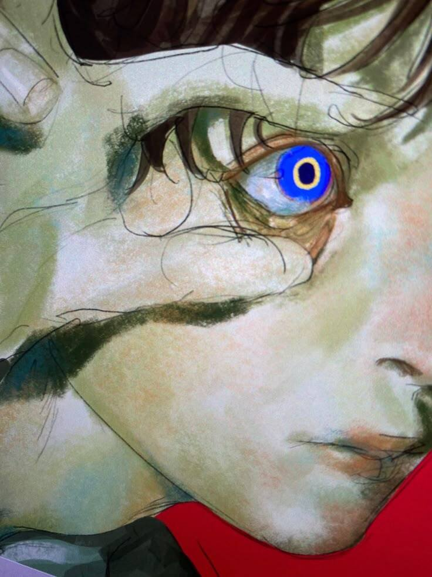

@@@&&&

The Digital Void
Fariszzy
|
Birthday: 13/7
Location: everywhere!
Reflexion - Dead Without You
0:003:10
$$$%%%
Who Am I?
What I Know
Programming Languages
I
HTML
Building website structure and clean pages.
II
CSS
Themes, responsive layouts, and animations.
III
JavaScript
Interactive buttons, audio players, and effects.
IV
Python
Automation, scripting, and cybersecurity tools.
V
C# & C++
Desktop applications and Windows tools.
VI
SQL
Database queries, tables, and data management.
GitHub
My Projects
01
Repository
Google Dorkzz
An open-source tool for generating, customizing, and executing advanced Google Dork queries with ease. Perfect for security researchers and penetration testers.
02
Repository
Cyber Vault
The open-source Data Warehouse.
03
Repository
PhotoMorph
The open-source toolset for cropping, resizing, and converting images to PDFs with ease.
∞
GitHub Profile
See More!
View all my repositories on GitHub